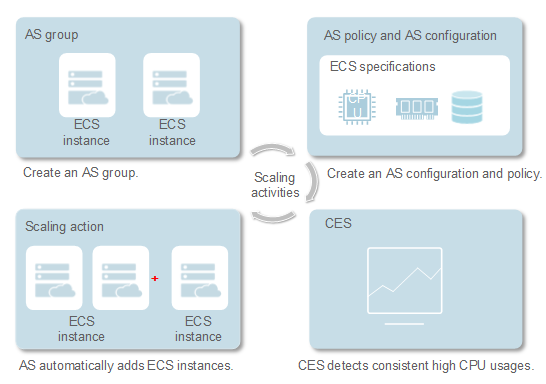

Server name: server_hostname
Server address: server_address
Auto Scaling (AS) is a service that automatically adjusts service resources based on your service requirements and configured AS policies. You can specify scaling configurations and policies based on service requirements. These configurations and policies free you from having to repeatedly adjust resources to keep up with service changes and demand spikes, helping you reduce resources required and manpower costs. Figure 1-1 shows the steps in a typical AS process.
Figure 1-1 AS process
